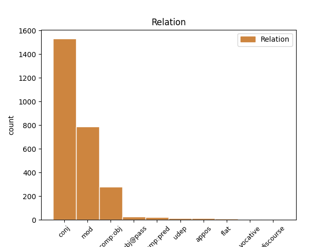
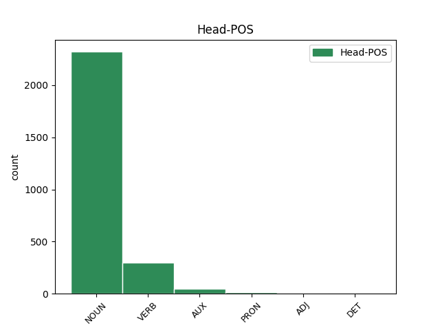
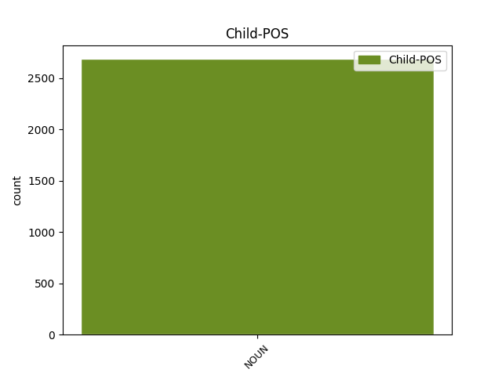

Distribution of features within this leaf



Agreement Rules sorted by frequency.
- When the dependent token is the conjunct(conj) of the head token, and the head token is NOUN and the dependent token is NOUN.
1 Ето _ _ _ _ 0 _ _ _
2 защо _ _ _ _ 0 _ _ _
3 има _ _ _ _ 0 _ _ _
4 изгледи _ _ _ _ 0 _ _ _
5 на _ _ _ _ 0 _ _ _
6 заключителните _ _ _ _ 0 _ _ _
7 дебати _ _ _ _ 0 _ _ _
8 през _ _ _ _ 0 _ _ _
9 декември _ _ _ _ 0 _ _ _
10 депутатите _ _ _ _ 0 _ _ _
11 да _ _ _ _ 0 _ _ _
12 прокарат _ _ _ _ 0 _ _ _
13 своите _ _ _ _ 0 _ _ _
14 искания _ _ _ _ 0 _ _ _
15 за _ _ _ _ 0 _ _ _
16 по-големи _ _ _ _ 0 _ _ _
17 разходи _ _ _ _ 0 _ _ _
18 , _ _ _ _ 0 _ _ _
19 свързани _ _ _ _ 0 _ _ _
20 с _ _ _ _ 0 _ _ _
21 външната _ _ _ _ 0 _ _ _
22 политика политика NOUN Ncfsi Definite=Ind|Gender=Fem|Number=Sing 0 _ _ _
23 и _ _ _ _ 0 _ _ _
24 политиката политика NOUN Ncfsd Definite=Def|Gender=Fem|Number=Sing 22 conj _ _
25 на _ _ _ _ 0 _ _ _
26 подпомагане _ _ _ _ 0 _ _ _
27 на _ _ _ _ 0 _ _ _
28 други _ _ _ _ 0 _ _ _
29 страни _ _ _ _ 0 _ _ _
30 . _ _ _ _ 0 _ _ _
1 Нито _ _ _ _ 0 _ _ _
2 Еврокомисията _ _ _ _ 0 _ _ _
3 , _ _ _ _ 0 _ _ _
4 нито _ _ _ _ 0 _ _ _
5 отделните _ _ _ _ 0 _ _ _
6 страни страна NOUN Ncfpi Definite=Ind|Gender=Fem|Number=Plur 0 _ _ _
7 членки членка NOUN Ncfpi Definite=Ind|Gender=Fem|Number=Plur 6 mod _ _
8 разполагат _ _ _ _ 0 _ _ _
9 с _ _ _ _ 0 _ _ _
10 надеждни _ _ _ _ 0 _ _ _
11 прогнозни _ _ _ _ 0 _ _ _
12 данни _ _ _ _ 0 _ _ _
13 за _ _ _ _ 0 _ _ _
14 разходите _ _ _ _ 0 _ _ _
15 , _ _ _ _ 0 _ _ _
16 свързани _ _ _ _ 0 _ _ _
17 с _ _ _ _ 0 _ _ _
18 разширяването _ _ _ _ 0 _ _ _
19 . _ _ _ _ 0 _ _ _
1 Взривът _ _ _ _ 0 _ _ _
2 , _ _ _ _ 0 _ _ _
3 станал _ _ _ _ 0 _ _ _
4 в _ _ _ _ 0 _ _ _
5 9,15 _ _ _ _ 0 _ _ _
6 ч _ _ _ _ 0 _ _ _
7 местно _ _ _ _ 0 _ _ _
8 време _ _ _ _ 0 _ _ _
9 , _ _ _ _ 0 _ _ _
10 изпочупил изпочупя-(се) VERB Vpptcao-smi Aspect=Perf|Definite=Ind|Gender=Masc|Number=Sing|Tense=Past|VerbForm=Part|Voice=Act 0 _ _ _
11 прозорци прозорец NOUN Ncmpi Definite=Ind|Gender=Masc|Number=Plur 10 comp:obj _ _
12 и _ _ _ _ 0 _ _ _
13 нанесъл _ _ _ _ 0 _ _ _
14 щети _ _ _ _ 0 _ _ _
15 на _ _ _ _ 0 _ _ _
16 околните _ _ _ _ 0 _ _ _
17 сгради _ _ _ _ 0 _ _ _
18 и _ _ _ _ 0 _ _ _
19 автомобили _ _ _ _ 0 _ _ _
20 . _ _ _ _ 0 _ _ _
1 Бомбата бомба NOUN Ncfsd Definite=Def|Gender=Fem|Number=Sing 2 subj@pass _ _
2 била съм AUX Vxitcat-sfi Aspect=Imp|Definite=Ind|Gender=Fem|Mood=Ind|Number=Sing|VerbForm=Part|Voice=Act 0 _ _ _
3 заложена _ _ _ _ 0 _ _ _
4 в _ _ _ _ 0 _ _ _
5 кола _ _ _ _ 0 _ _ _
6 , _ _ _ _ 0 _ _ _
7 паркирана _ _ _ _ 0 _ _ _
8 близо _ _ _ _ 0 _ _ _
9 до _ _ _ _ 0 _ _ _
10 участъка _ _ _ _ 0 _ _ _
11 . _ _ _ _ 0 _ _ _
1 Писателят _ _ _ _ 0 _ _ _
2 бил съм AUX Vxitcat-smi Aspect=Imp|Definite=Ind|Gender=Masc|Mood=Ind|Number=Sing|VerbForm=Part|Voice=Act 0 _ _ _
3 любящ _ _ _ _ 0 _ _ _
4 баща баща NOUN Ncmsi Definite=Ind|Gender=Masc|Number=Sing 2 comp:pred _ _
5 и _ _ _ _ 0 _ _ _
6 съпруг _ _ _ _ 0 _ _ _
1 Навръх _ _ _ _ 0 _ _ _
2 Богоявление _ _ _ _ 0 _ _ _
3 Нови нов ADJ Ams-e Case=Voc|Degree=Pos|Gender=Masc|Number=Sing 0 _ _ _
4 пазар пазар NOUN Ncmsi Definite=Ind|Gender=Masc|Number=Sing 3 flat _ _
5 се _ _ _ _ 0 _ _ _
6 прости _ _ _ _ 0 _ _ _
7 с _ _ _ _ 0 _ _ _
8 първокласничката _ _ _ _ 0 _ _ _
9 . _ _ _ _ 0 _ _ _
1 Конкурсите _ _ _ _ 0 _ _ _
2 бяха _ _ _ _ 0 _ _ _
3 в _ _ _ _ 0 _ _ _
4 пет _ _ _ _ 0 _ _ _
5 области област NOUN Ncfpi Definite=Ind|Gender=Fem|Number=Plur 0 _ _ _
6 - _ _ _ _ 0 _ _ _
7 литература литература NOUN Ncfsi Definite=Ind|Gender=Fem|Number=Sing 5 appos _ SpaceAfter=No
8 , _ _ _ _ 0 _ _ _
9 изобразително _ _ _ _ 0 _ _ _
10 изкуство _ _ _ _ 0 _ _ _
11 и _ _ _ _ 0 _ _ _
12 фотография _ _ _ _ 0 _ _ _
13 , _ _ _ _ 0 _ _ _
14 композиране _ _ _ _ 0 _ _ _
15 , _ _ _ _ 0 _ _ _
16 музикално _ _ _ _ 0 _ _ _
17 изпълнителско _ _ _ _ 0 _ _ _
18 изкуство _ _ _ _ 0 _ _ _
19 и _ _ _ _ 0 _ _ _
20 танцово _ _ _ _ 0 _ _ _
21 изкуство _ _ _ _ 0 _ _ _
22 . _ _ _ _ 0 _ _ _
1 Вярвам _ _ _ _ 0 _ _ _
2 , _ _ _ _ 0 _ _ _
3 защото _ _ _ _ 0 _ _ _
4 когато _ _ _ _ 0 _ _ _
5 говорим _ _ _ _ 0 _ _ _
6 за _ _ _ _ 0 _ _ _
7 социалната _ _ _ _ 0 _ _ _
8 цена _ _ _ _ 0 _ _ _
9 на _ _ _ _ 0 _ _ _
10 българския _ _ _ _ 0 _ _ _
11 преход _ _ _ _ 0 _ _ _
12 , _ _ _ _ 0 _ _ _
13 децата дете NOUN Ncnpd Definite=Def|Gender=Neut|Number=Plur 24 mod _ SpaceAfter=No
14 , _ _ _ _ 0 _ _ _
15 които _ _ _ _ 0 _ _ _
16 най-силно _ _ _ _ 0 _ _ _
17 са _ _ _ _ 0 _ _ _
18 го _ _ _ _ 0 _ _ _
19 усетили _ _ _ _ 0 _ _ _
20 на _ _ _ _ 0 _ _ _
21 гърба _ _ _ _ 0 _ _ _
22 си _ _ _ _ 0 _ _ _
23 - _ _ _ _ 0 _ _ _
24 това този PRON Pde-os-n Case=Nom|Gender=Neut|Number=Sing|PronType=Dem 0 _ _ _
25 сте _ _ _ _ 0 _ _ _
26 вие _ _ _ _ 0 _ _ _
27 , _ _ _ _ 0 _ _ _
28 посочи _ _ _ _ 0 _ _ _
29 Президентът _ _ _ _ 0 _ _ _
30 . _ _ _ _ 0 _ _ _
1 Дъщерята _ _ _ _ 0 _ _ _
2 на _ _ _ _ 0 _ _ _
3 бившия _ _ _ _ 0 _ _ _
4 югославски _ _ _ _ 0 _ _ _
5 президент _ _ _ _ 0 _ _ _
6 Слободан _ _ _ _ 0 _ _ _
7 Милошевич _ _ _ _ 0 _ _ _
8 Мария _ _ _ _ 0 _ _ _
9 е _ _ _ _ 0 _ _ _
10 приета приема VERB Vpptcv--sfi Aspect=Perf|Definite=Ind|Gender=Fem|Number=Sing|VerbForm=Part|Voice=Pass 0 _ _ _
11 миналата _ _ _ _ 0 _ _ _
12 седмица седмица NOUN Ncfsi Definite=Ind|Gender=Fem|Number=Sing 10 udep _ _
13 в _ _ _ _ 0 _ _ _
14 белградската _ _ _ _ 0 _ _ _
15 военна _ _ _ _ 0 _ _ _
16 болница _ _ _ _ 0 _ _ _
17 поради _ _ _ _ 0 _ _ _
18 депресия _ _ _ _ 0 _ _ _
19 , _ _ _ _ 0 _ _ _
20 писа _ _ _ _ 0 _ _ _
21 в. _ _ _ _ 0 _ _ _
22 " _ _ _ _ 0 _ _ _
23 Вечерне _ _ _ _ 0 _ _ _
24 новости _ _ _ _ 0 _ _ _
25 " _ _ _ _ 0 _ _ _
26 , _ _ _ _ 0 _ _ _
27 цитиран _ _ _ _ 0 _ _ _
28 от _ _ _ _ 0 _ _ _
29 АФП _ _ _ _ 0 _ _ _
30 . _ _ _ _ 0 _ _ _
1 Кандидатурата кандидатура NOUN Ncfsd Definite=Def|Gender=Fem|Number=Sing 2 subj@pass _ _
2 била съм VERB Vxitcat-sfi Aspect=Imp|Definite=Ind|Gender=Fem|Mood=Ind|Number=Sing|VerbForm=Part|Voice=Act 0 _ _ _
3 единодушно _ _ _ _ 0 _ _ _
4 подкрепена _ _ _ _ 0 _ _ _
5 , _ _ _ _ 0 _ _ _
6 съобщиха _ _ _ _ 0 _ _ _
7 отлично _ _ _ _ 0 _ _ _
8 информирани _ _ _ _ 0 _ _ _
9 източници _ _ _ _ 0 _ _ _
10 . _ _ _ _ 0 _ _ _
1 Дано _ _ _ _ 0 _ _ _
2 късметът _ _ _ _ 0 _ _ _
3 да _ _ _ _ 0 _ _ _
4 съпътства _ _ _ _ 0 _ _ _
5 него аз PRON Ppelas3m Case=Acc|Gender=Masc|Number=Sing|Person=3|PronType=Prs 0 _ _ _
6 и _ _ _ _ 0 _ _ _
7 талантливите _ _ _ _ 0 _ _ _
8 му _ _ _ _ 0 _ _ _
9 колеги колега NOUN Ncmpi Definite=Ind|Gender=Masc|Number=Plur 5 conj _ _
10 във _ _ _ _ 0 _ _ _
11 всички _ _ _ _ 0 _ _ _
12 театри _ _ _ _ 0 _ _ _
13 през _ _ _ _ 0 _ _ _
14 новия _ _ _ _ 0 _ _ _
15 век _ _ _ _ 0 _ _ _
16 . _ _ _ _ 0 _ _ _
1 Добър _ _ _ _ 0 _ _ _
2 ден ден NOUN Ncmsi Definite=Ind|Gender=Masc|Number=Sing 0 _ _ _
3 , _ _ _ _ 0 _ _ _
4 млади _ _ _ _ 0 _ _ _
5 ми _ _ _ _ 0 _ _ _
6 господин господин NOUN Ncmsi Definite=Ind|Gender=Masc|Number=Sing 2 vocative _ _
7 Бергман _ _ _ _ 0 _ _ _
8 . _ _ _ _ 0 _ _ _
1 А _ _ _ _ 0 _ _ _
2 , _ _ _ _ 0 _ _ _
3 има _ _ _ _ 0 _ _ _
4 , _ _ _ _ 0 _ _ _
5 разбира _ _ _ _ 0 _ _ _
6 се _ _ _ _ 0 _ _ _
7 , _ _ _ _ 0 _ _ _
8 само _ _ _ _ 0 _ _ _
9 че _ _ _ _ 0 _ _ _
10 той аз PRON Ppe-os3m Case=Nom|Gender=Masc|Number=Sing|Person=3|PronType=Prs 0 _ _ _
11 , _ _ _ _ 0 _ _ _
12 чичо чичо NOUN Ncmsi Definite=Ind|Gender=Masc|Number=Sing 10 appos _ SpaceAfter=No
13 , _ _ _ _ 0 _ _ _
14 отива _ _ _ _ 0 _ _ _
15 на _ _ _ _ 0 _ _ _
16 пирамидата _ _ _ _ 0 _ _ _
17 обикновено _ _ _ _ 0 _ _ _
18 в _ _ _ _ 0 _ _ _
19 събота _ _ _ _ 0 _ _ _
20 или _ _ _ _ 0 _ _ _
21 в _ _ _ _ 0 _ _ _
22 неделя _ _ _ _ 0 _ _ _
23 да _ _ _ _ 0 _ _ _
24 си _ _ _ _ 0 _ _ _
25 почива _ _ _ _ 0 _ _ _
26 . _ _ _ _ 0 _ _ _
1 Области _ _ _ _ 0 _ _ _
2 като _ _ _ _ 0 _ _ _
3 данъчната _ _ _ _ 0 _ _ _
4 политика _ _ _ _ 0 _ _ _
5 и _ _ _ _ 0 _ _ _
6 социалната _ _ _ _ 0 _ _ _
7 сигурност _ _ _ _ 0 _ _ _
8 , _ _ _ _ 0 _ _ _
9 имиграцията _ _ _ _ 0 _ _ _
10 и _ _ _ _ 0 _ _ _
11 граничния _ _ _ _ 0 _ _ _
12 контрол _ _ _ _ 0 _ _ _
13 , _ _ _ _ 0 _ _ _
14 култура _ _ _ _ 0 _ _ _
15 , _ _ _ _ 0 _ _ _
16 телевизионно телевизионен ADJ Ansi Definite=Ind|Degree=Pos|Gender=Neut|Number=Sing 0 _ _ _
17 и _ _ _ _ 0 _ _ _
18 радиоразпръскване радиоразпръскване NOUN Ncnsi Definite=Ind|Gender=Neut|Number=Sing 16 conj _ SpaceAfter=No
19 , _ _ _ _ 0 _ _ _
20 здравеопазване _ _ _ _ 0 _ _ _
21 и _ _ _ _ 0 _ _ _
22 образование _ _ _ _ 0 _ _ _
23 останаха _ _ _ _ 0 _ _ _
24 в _ _ _ _ 0 _ _ _
25 обхвата _ _ _ _ 0 _ _ _
26 на _ _ _ _ 0 _ _ _
27 единодушието _ _ _ _ 0 _ _ _
28 . _ _ _ _ 0 _ _ _
1 Доходът _ _ _ _ 0 _ _ _
2 им _ _ _ _ 0 _ _ _
3 обаче _ _ _ _ 0 _ _ _
4 е _ _ _ _ 0 _ _ _
5 десетина _ _ _ _ 0 _ _ _
6 пъти път NOUN Ncmt Gender=Masc|Number=Count 7 udep _ _
7 по-висок висок ADJ Amsi Definite=Ind|Degree=Cmp|Gender=Masc|Number=Sing 0 _ _ _
8 . _ _ _ _ 0 _ _ _
1 Това _ _ _ _ 0 _ _ _
2 бяха _ _ _ _ 0 _ _ _
3 " _ _ _ _ 0 _ _ _
4 Турист _ _ _ _ 0 _ _ _
5 инвест _ _ _ _ 0 _ _ _
6 " _ _ _ _ 0 _ _ _
7 и _ _ _ _ 0 _ _ _
8 " _ _ _ _ 0 _ _ _
9 Петрол петрол NOUN Ncmsi Definite=Ind|Gender=Masc|Number=Sing 0 _ _ _
10 холдинг холдинг NOUN Ncmsi Definite=Ind|Gender=Masc|Number=Sing 9 flat _ SpaceAfter=No
11 " _ _ _ _ 0 _ _ _
12 . _ _ _ _ 0 _ _ _
1 02.08.2000 02.08.2000 NOUN Ncmsi Definite=Ind|Gender=Masc|Number=Sing 3 discourse _ _
2 Турският _ _ _ _ 0 _ _ _
3 посланик посланик NOUN Ncmsi Definite=Ind|Gender=Masc|Number=Sing 0 _ _ _
4 на _ _ _ _ 0 _ _ _
5 излизане _ _ _ _ 0 _ _ _
6 от _ _ _ _ 0 _ _ _
7 МВР _ _ _ _ 0 _ _ _
8 след _ _ _ _ 0 _ _ _
9 срещата _ _ _ _ 0 _ _ _
10 си _ _ _ _ 0 _ _ _
11 с _ _ _ _ 0 _ _ _
12 Емануил _ _ _ _ 0 _ _ _
13 Йорданов _ _ _ _ 0 _ _ _
14 по _ _ _ _ 0 _ _ _
15 повод _ _ _ _ 0 _ _ _
16 скандалното _ _ _ _ 0 _ _ _
17 изказване _ _ _ _ 0 _ _ _
18 на _ _ _ _ 0 _ _ _
19 Наско _ _ _ _ 0 _ _ _
20 Сираков _ _ _ _ 0 _ _ _
Disagree Examples:
1 Купих _ _ _ _ 0 _ _ _
2 от _ _ _ _ 0 _ _ _
3 пазара _ _ _ _ 0 _ _ _
4 кола кола NOUN Ncfsi Definite=Ind|Gender=Fem|Number=Sing 0 _ _ _
5 дърва дърво NOUN Ncnpi Definite=Ind|Gender=Neut|Number=Plur 4 mod _ SpaceAfter=No
6 . _ _ _ _ 0 _ _ _
1 Тъй _ _ _ _ 0 _ _ _
2 си _ _ _ _ 0 _ _ _
3 чака _ _ _ _ 0 _ _ _
4 от _ _ _ _ 0 _ _ _
5 година година NOUN Ncfsi Definite=Ind|Gender=Fem|Number=Sing 0 _ _ _
6 време време NOUN Ncnsi Definite=Ind|Gender=Neut|Number=Sing 5 mod _ SpaceAfter=No
7 . _ _ _ _ 0 _ _ _
1 Десетки десятка NOUN Ncfpi Definite=Ind|Gender=Fem|Number=Plur 0 _ _ _
2 хиляди _ _ _ _ 0 _ _ _
3 граждани гражданин NOUN Ncmpi Definite=Ind|Gender=Masc|Number=Plur 1 mod _ _
4 се _ _ _ _ 0 _ _ _
5 бяха _ _ _ _ 0 _ _ _
6 евакуирали _ _ _ _ 0 _ _ _
7 от _ _ _ _ 0 _ _ _
8 града _ _ _ _ 0 _ _ _
9 поради _ _ _ _ 0 _ _ _
10 въздушните _ _ _ _ 0 _ _ _
11 бомбардировки _ _ _ _ 0 _ _ _
12 на _ _ _ _ 0 _ _ _
13 съюзническата _ _ _ _ 0 _ _ _
14 авиация _ _ _ _ 0 _ _ _
15 . _ _ _ _ 0 _ _ _
1 Виеха _ _ _ _ 0 _ _ _
2 глутници глутница NOUN Ncfpi Definite=Ind|Gender=Fem|Number=Plur 0 _ _ _
3 чакали чакал NOUN Ncmpi Definite=Ind|Gender=Masc|Number=Plur 2 mod _ SpaceAfter=No
4 . _ _ _ _ 0 _ _ _
1 Някой _ _ _ _ 0 _ _ _
2 полека _ _ _ _ 0 _ _ _
3 вратата врата NOUN Ncfsd Definite=Def|Gender=Fem|Number=Sing 4 comp:obj _ _
4 отворил отворя-(се) VERB Vpptcao-smi Aspect=Perf|Definite=Ind|Gender=Masc|Number=Sing|Tense=Past|VerbForm=Part|Voice=Act 0 _ _ _
5 . _ _ _ _ 0 _ _ _